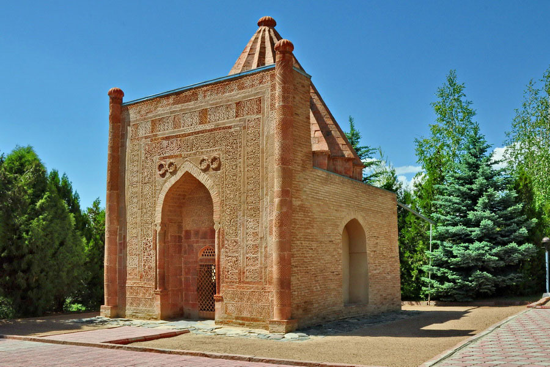

Манастын күмбөзү

Кратко
Манастын күмбөзү — орто кылымга (14-к.) таандык архитектуралык эстелик. Эпос жана эл ичиндеги уламыш боюнча баатырды эскерип жүрүш үчүн бейитине анын жары Каныкей атайын тургузган көрөсөндүү курулуш. Ал ушул кезге чейин сакталган. 1893-жылда орустун белгилүү изилдөөчүсү академик В. В. Бартольддун Орто Азияга жасаган илимий саякаты жана 1895-ж. Ташкен шаарындагы археология ышкыбоздордун Түркстандык ийриминин уюштурулушу М. к-нүн илимий негизде изилденишине өбөлгө түзүлгөн. Ошол жылдары В. В. Бартольд тарабынан М. к-нүн абалы, негизги архитектуралык мүнөздөмөлөрү кагазга түшүрүлүп, ченөө иштери аткарылган. 1923-ж. Түркстандын архитектуралык эстеликтерин мамлекет тарабынан корукка алуу тууралуу атайын декрет жарыялагандан кийин М. к. Кыргыз мамлекет тарабынан коргоого алынган. Ал ким тарабынан качан, кимге арналып курулган деген көптөгөн суроолорго күмбөздүн башкы фасадындагы «куфи» жазмасындагы жазуу жооп берди. Жазуунун толук жандырмагын 1938-ж. А. М. Беленицкий сунуш кылып, кийинчерээк М. Е. Массон айрым өзгөртүүлөрдү кийирген: «Улуу даражалуу мазар», жакшылардын жакшысы, даанышман, сыпайы, бактылуулардын нускасы, кудаа таалага ылайык иштердин төртүнчү доордогу эгеси, аялдардын эң даңктуусу Кенизек-Хатун, урматтуу эмирдин кызы, марттык менен ырайымдын булагынын кылычы да, каламы да жеңилбес, Абуке эмирдин, алардын сырын кудаа таалам билгилик кылбасын да жүргөн жерин бейиш кылсын..
Как добраться
Рекомендации по транспорту, лучшие сезоны для посещения и контакты местных гидов.
Назад к списку